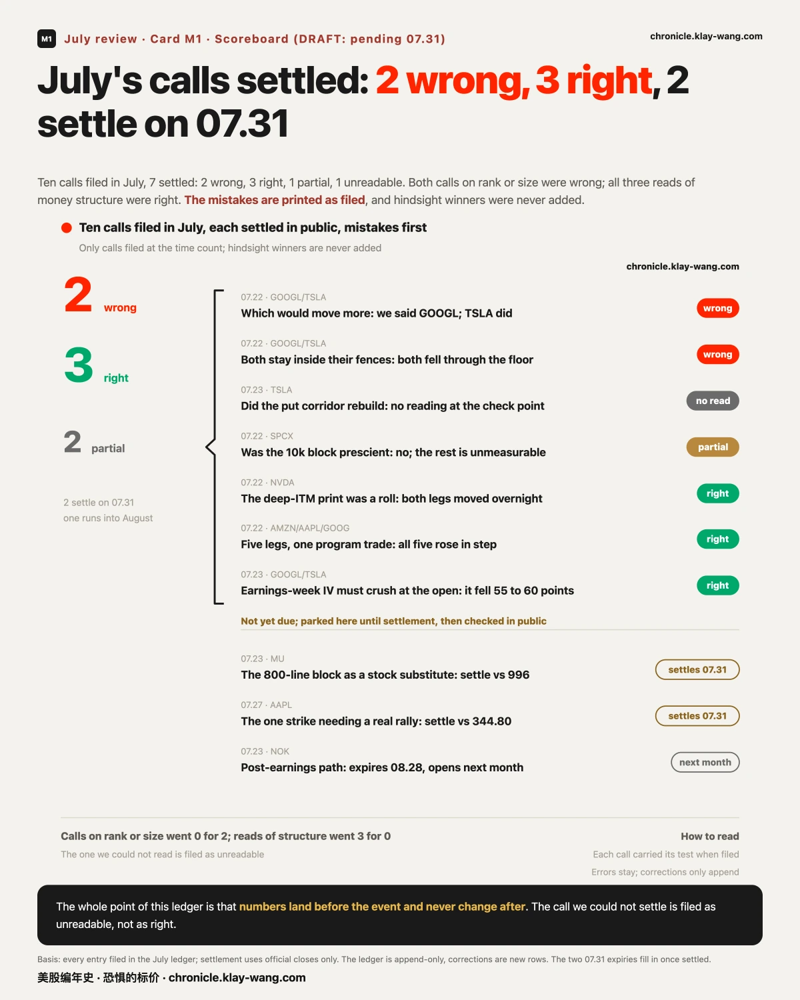
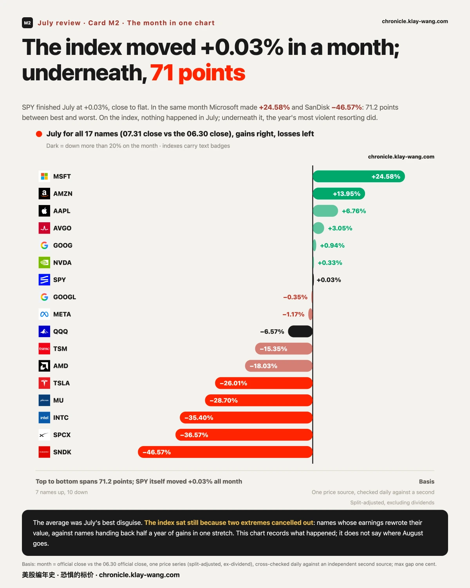
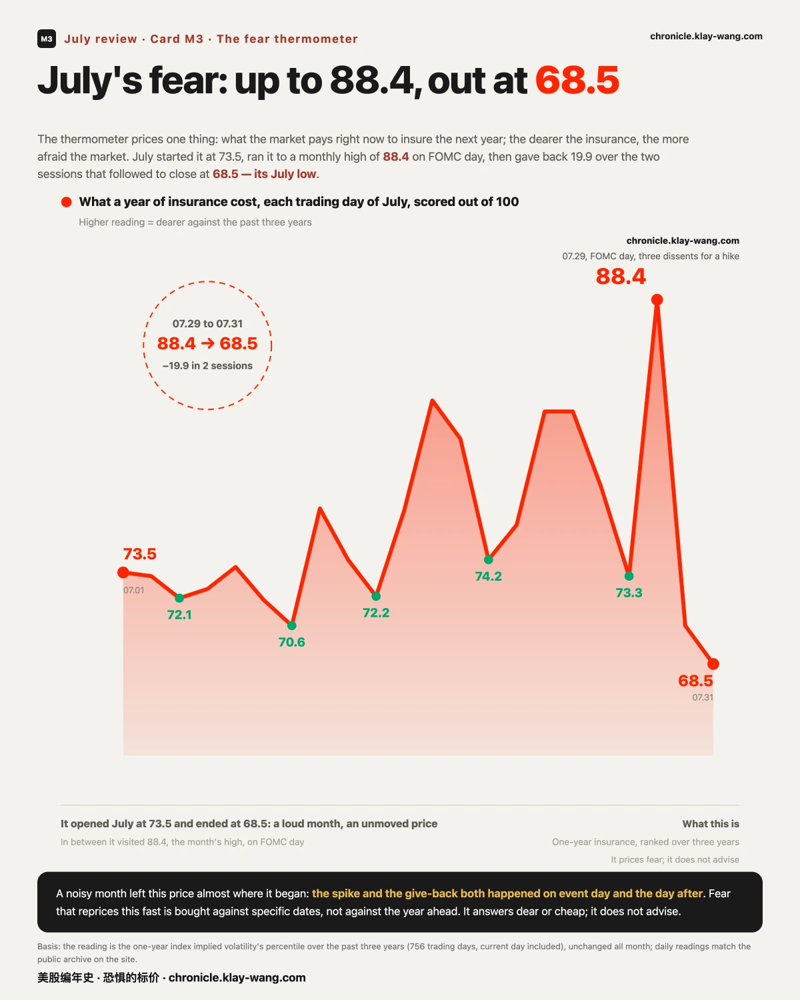
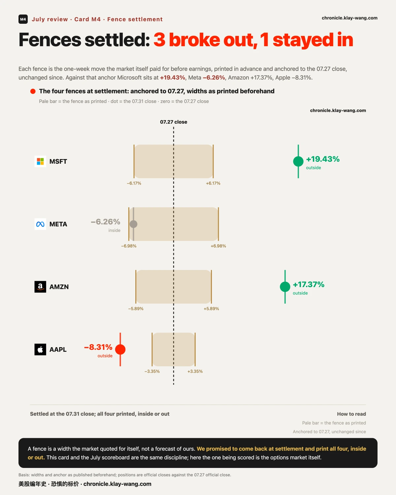
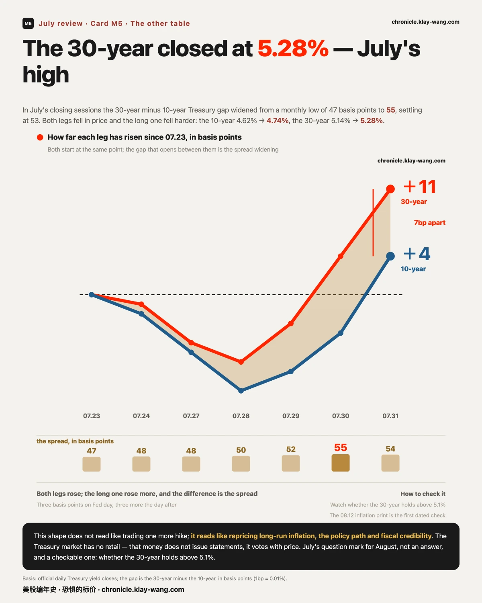
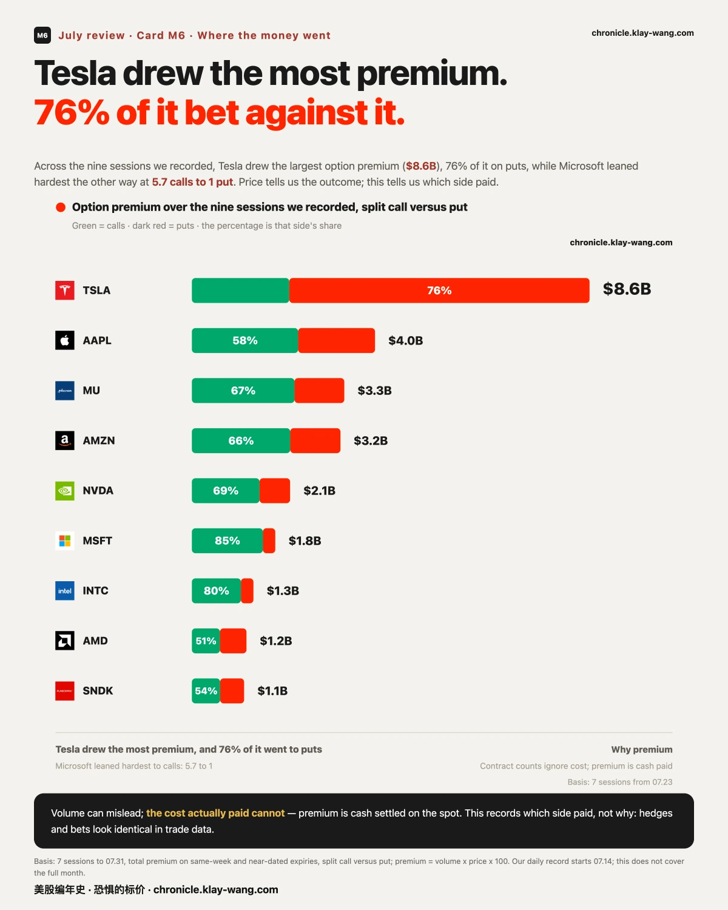
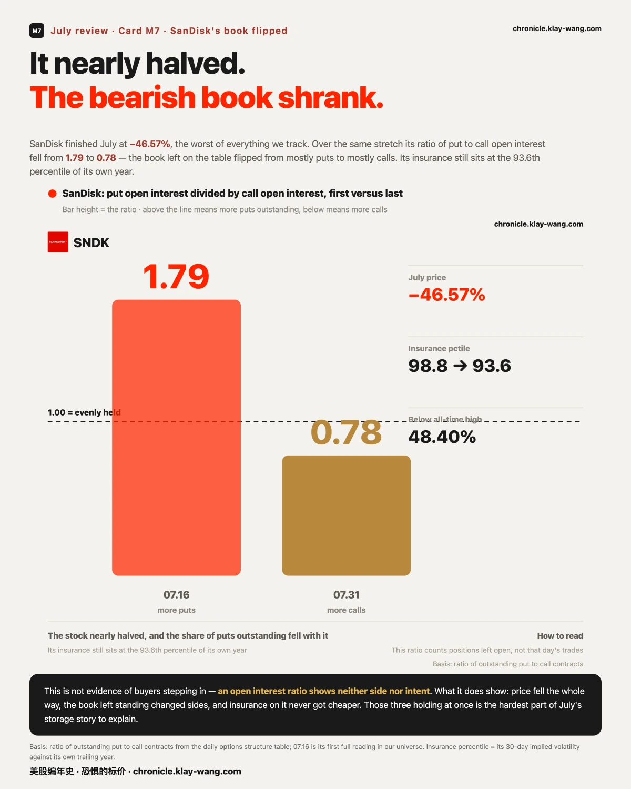
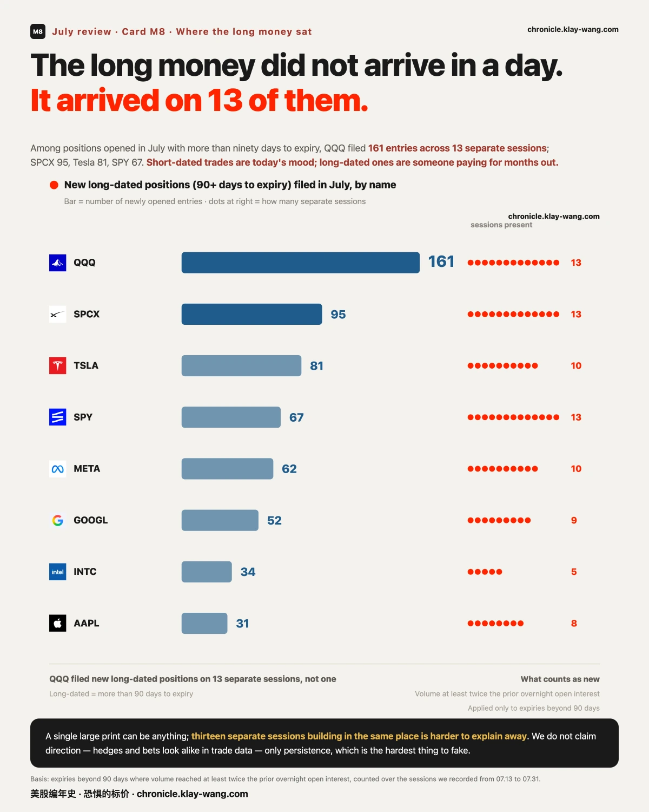
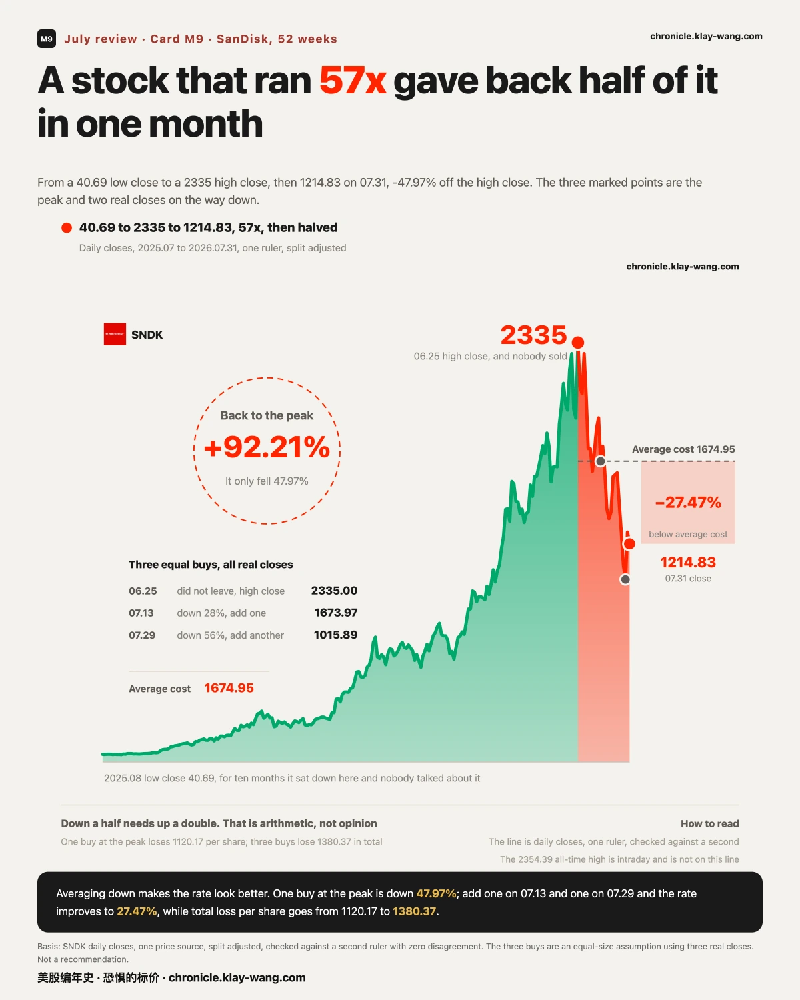

07.31 收盘，标普 ETF 报 747.03，全月 +0.03%。一个月，指数回到了它出发的地方。
而这一天的盘中是这样的：开盘五分钟，它冲到距自己伽马翻转位 0.31 点的地方被拒；接下来四十分钟跌掉 8.6 点，连破昨收、看跌密集峰 743、看跌墙 740；午后又全部收回，收在翻转位上方。当天早上那份宏观数据落地时，它只动了 0.6 点。
收盘价什么也没说，中间发生的一切才是这个月的内容。指数只告诉你平均发生了什么，它从不告诉你发生在谁身上。

我们记录的这些交易日里，逐条立案、逐条开奖。
错的两条，错在同一个地方：财报夜押谁动得大：我们押了谷歌，动得大的是特斯拉；押两家都不会走出各自的波动围栏：结果双双跌穿下沿，围栏根本不够宽。两条都是在猜幅度和名次。
对的三条，也对在同一个地方：英伟达那笔深度价内大单是移仓不是新押注（次日两条腿的隔夜持仓一起动，坐实）；横跨三只票的五条腿是同一笔程序单（五腿隔夜齐增）；财报周当周到期的保险价开盘必然塌（塌了 55 到 60 个波动点）。三条都是在读资金留下的结构。
还有两条我们答不出来。七月最后一天，英特尔那组四腿和美光那七档看涨阶梯到期，而它们的隔夜持仓查不到了：当日到期合约只有一个采集窗口，我们的轮次没覆盖上。这两条的结论是无法判定，不是没成立。教训已经立档：埋在当日到期合约上的开奖，动作必须排进当天的轮次。
模式干净得有点刺眼：猜价格往哪走、猜谁动得大，0 对 2；看懂这笔钱在干什么，3 对 0。我们不猜牌，我们看筹码。
记录的价值全在于事前落库、事后不改；一旦允许自己回头修，整本账就一文不值。记分牌上的每一个错，都是在给对的那几条背书。

全月 17 只标的，7 只上涨、10 只下跌。上面是微软 +24.58%、亚马逊 +13.95%、苹果 +6.76%；下面是闪迪 −46.57%、SPCX −36.57%、英特尔 −35.40%、美光 −28.70%、特斯拉 −26.01%；中间是标普 ETF +0.03%、纳指 ETF −6.57%、英伟达 +0.33%。
最高与最低差 71.2 个百分点，而指数本身一个月只走了 0.03%：这不是指数没事、个股有事，是两边的极端恰好抵掉了。一边是财报直接改写市值的（微软一天多出四千五百亿美元，有记录以来最大的单日增量）；一边是把上半年涨幅整段还回去的。
存储那两只的背景值得单独说一句，因为它很容易被误读：闪迪在过去 52 周里从 40 涨到 2354，58 倍。所以这个月的 −46.57%，是从天上下来，不是被错杀。我们只记录它走过的位置，不评价它该在哪。
一个 +0.03% 的月份里，有人赚了四分之一，有人少了将近一半。指数只告诉你平均发生了什么。
价格：这是墙与位置的一个月。 07.17 月度到期日，看涨与看跌的密集价位塌缩成一根针：谷歌的现价、两道墙、翻转位、最大痛点全部挤在 1.4 点之内。07.20 重置，墙位整个重排。07.29 联储决议。财报周把伽马地图连夜重画：纳指 ETF 的翻转位一夜下移 33.5 点，美光下移 96.5 点。到 07.31，苹果收在自家看跌密集价位下方，亚马逊冲破自家看涨密集价位 16 点。整月里价格与它自己那道墙的关系反复兑现，不是因为墙有魔力，而是因为那些价位上真的堆着钱，堆得够多，价格路过时就会被拽一下。墙会移，而且每个到期日之后必须整个重读。
资金：我们记下的，和后来发生的。 07.20 清晨有人用一万二千美元买了三千张四美分的深度崩盘保险，一笔打完、全天再无加仓；07.22 美光 800 线的一亿美元大单；07.23 英伟达的深度价内移仓，次日坐实；07.30 英特尔的四腿结构与标普 09.04 到期的两侧新单：最后这笔在 07.31 开出了七月最干净的一个对照：同一天、同一个到期日，看跌那侧六成的量留仓过夜，看涨那侧只留下 8.7%。 而那个到期日，钉在八月非农那一天。四美分的保险后来没有用上；移仓的判断被数据坐实；两笔到期日的开奖我们查不到，就写查不到。能被检验，是这本账唯一的护城河。

恐惧：从 73.5 到 88.4，再到 68.5。 为未来一年买保险的价钱，七月从 73.5 出发，07.10 落到 70.6，07.17 到期日冲到 82.9，联储决议那天冲到全月最高 88.4，随后两个交易日回吐 19.9，最后一个交易日收在 68.5：全月最低。一个月吵完，这份怕收在了比月初更便宜的地方；而冲高和回落都发生在事件的当天和第二天。保险贵起来快、便宜回去也快，说明七月买的怕是对着具体日子买的，不是对着未来一年。

财报前，市场自己用真金白银给四家标出了一周的波动宽度，我们在事前原样印出、锚定 07.27 收盘、事后一字未改。07.31 收盘结算：微软 +19.43%（栏 ±6.17%，出栏）、亚马逊 +17.37%（±5.89%，出栏）、苹果 −8.31%（±3.35%，出栏）、Meta −6.26%（±6.98%，栏内）。
三只走出了市场事前为它们画的宽度：这一轮财报的幅度被系统性低估了。
但真正该记住的是 Meta：07.30 我们印过它已经出栏（当时 −9.23%），而结算日它回到了栏内。 那个中途读数没有错，它只是不是结论。这和我们这个月在联储决议日做的六点采样是同一件事：同一天的保险价，你取哪个时点，可以得出三个互相矛盾但都真实的结论。所以主序列锚收盘，不是因为收盘更准，而是因为它是唯一一个不需要我们挑选的点。
中途读数只告诉你那一刻，从不告诉你结局。
去杠杆解决的只是资金的问题；反弹能走多远，要看的是另一张桌子。而七月最后两天，那张桌子上有一个可查的变化：30 年期与 10 年期美债的收益率利差，从月内最低的 47 个基点走阔到 55 个基点，其中联储决议当天 +3 个基点、第二天再 +3 个基点；月末最后一天小幅收窄到 53 个基点，但两条腿双双再上台阶（10 年期 4.74%、30 年期 5.28%，均为七月最高）。
拆开两条腿看：07.29 到 07.31，10 年期从 4.62% 升到 4.74%，30 年期从 5.14% 升到 5.28%：两条腿都在跌价，而长端跌得更狠，利差因此从 47 个基点的月内低点走阔。这个形状不是在交易短期还会不会加息，它更像在给长期通胀、政策路径与财政可信度重新定价。

市场上有个说法叫债市义警：债券市场没有散户，全是机构的钱；当这批钱对政策不满意，它们不发声明，它们用价格表态。某种意义上，债市正在替联储做一部分收紧金融条件的工作：而这件事从来不问股票同不同意。
这一段是七月给八月留下的问号，不是答案。它可以被检验：七月最后三个交易日，30 年期已经连续三天收在 5.1% 上方、最后一天到 5.28%。如果这个位置继续抬升，这条逆风就还在账上；如果退回 5.0% 下方，这一段就翻篇了。08.12 的通胀数据和八月的长债标售，是接下来两个可查的时点。
而七月苦了一整个月，最后一周终于给了一段像样的反弹：这句话和上面那段并不矛盾，它们只是两张不同的桌子。
不是为了邀功，是为了让你能检验：一本账值不值钱，取决于它敢不敢让你回头翻。
07.27 我们写过一句市场追的是英伟达的信用故事，不是存储的供给故事。 那天它只是当日的一个观察。到月末：英伟达全月 +0.33%，而存储那两只是 −28.70% 和 −46.57%。两个故事被定成了完全不同的价，这个分野走完了整个七月。
07.25 我们写过存储跌了三成，上车的票反而更贵了。 那句话的重点不是方向，是一个当时可测的事实：正股在跌，而它的保险价在涨。到月末，存储又跌了一大截，而它们的长端保险价仍然是全宇宙最高的一档（闪迪一年期读数 106.51，是标普的五倍多）。跌不便宜，是七月存储最稳定的一个特征。
07.23 我们写过谷歌 CFO 还没念出数字，存储股的期权已经把剧本演完了。 后来资本开支确实成了整月的主线之一。
也有没兑现的：07.20 那张四美分的崩盘保险，到七月结束一次都没用上。 我们当时只写了有人付了这个价，没说它会赢：这也是为什么现在不用改口。
07.22 我们记的美光 800 线一亿美元大单，07.31 到期，收盘 823.03，远低于保本线 996。 这一笔的结局是亏的，我们照记。
关于大盘：一个不动的指数，是平静还是拉锯？
依据：七月标普 ETF +0.03%，而 17 只成分里最高与最低差 71.2 个百分点；同期为未来一年买保险的价钱从 73.5 到 88.4 再到 68.5。推理：如果是平静，指数不动、成分也不该散成这样；如果是拉锯，就应该看到成分剧烈重排而指数被抵消：七月是后者。所以七月市场很稳这句话，在指数层面成立，在成分层面不成立。推翻条件：八月如果成分差距收窄到 30 个百分点以内而指数继续横着，那才是真的平静。
关于科技内部：是轮动，还是分化？
先说我们不能说的：轮动意味着钱从 A 流向了 B，而这需要资金流向数据：我们没有，所以我们从不用这个词。 我们能测的是分化：同一天里，微软几乎平开、涨幅 3.27% 全部产生在盘中、收在当日区间的 88% 位置；而超微与英特尔收在当日区间的最低 1%。同一个板块，同一天，两种完全相反的日内形状。月度上更极端：微软 +24.58%、英特尔 −35.40%，同属科技。推理：能确认的是同一个标签下的资产已经不再一起走；不能确认的是钱有没有从一边搬到另一边。推翻条件：如果八月这些票重新开始同涨同跌（日度相关性回升），分化这个描述就该收回。
关于存储：这是死猫跳，还是反转？
这个问题我们不回答方向，但可以把它拆成可查的坐标。依据：闪迪 52 周从 40 到 2354（58 倍），七月 −46.57%，距历史最高回撤 48.40%；美光七月 −28.70%。而 07.31 这天它们的日内形状是高开被卖：闪迪开盘时还涨 8.10%，从开盘算跌 12.20%；美光跳空 +5.18%，从开盘算跌 10.54%，两只都收在当日区间的低位。推理：跳空是隔夜给的，盘中是当天卖的：这两件事的参与者不是同一批人，而只看全天跌幅会把这个区别抹掉。同时，07.31 有人在美光今天这根阴线里，为 1000 线的看涨期权付了 517 万美元（vol/OI 3.66，是当天新建的仓）。推翻条件：不看方向，看两件事：其一，跳空与盘中是否重新同号（连续几天高开高走或低开低走，说明隔夜与日内的人看法一致了）；其二，长端保险价是否回落（闪迪一年期读数从 106.51 往下走，说明市场不再为它的不确定性付这么高的价）。这两件事我们每天都在记，到时候回来对。
七月我们写过一句市场追的是英伟达的信用故事，不是存储的供给故事。一个月过去，这句话的两半走成了两个极端：英伟达全月 +0.33%，存储那两只是 −28.70% 和 −46.57%。信用故事的定价没变，供给故事的定价崩了。
但真正值得留到八月的，不是这个结论，是钱在崩的过程里做了三件互相矛盾的事。

第一件：短打的钱在美光身上是偏看涨的。 我们记录的这九个交易日，美光的期权权利金 33 亿美元排全场第三，其中 67% 付在看涨一侧：而它同期跌了 28.70%。这不是有人在抄底（成交数据看不出谁买谁卖），但它至少说明：跌的过程中，付钱的人并没有一边倒地站在下跌那一侧。

第二件：闪迪的留仓换了侧。 看跌与看涨的未平仓比从 1.79 掉到 0.78，留在场上的仓从看跌为主变成了看涨为主，而同期股价近乎腰斩、保险价仍在自己一年的 93.6 分位。跌了一半、赌跌的持仓反而少了、保险还是最贵的一档，这三件事同时成立，是七月存储最难解释的一段。

第三件：长天期的钱压根不在存储上。 到期在三个月以上的新建仓，前四名是纳指 ETF（161 条 / 13 个交易日）、SPCX、特斯拉、标普 ETF：存储一只都没进前四。短打热闹、长钱缺席，这两句要一起说才诚实。
八月的位置已经摆在那里了。 07.31 收盘时，美光的现价站在自家伽马翻转位 上方约 27 点，英特尔在自家翻转位 上方约 7 点，超微 上方约 45 点；而闪迪当天的翻转位算不出来（我们的两把尺子都给不出值，这在本账里是第一次，原样记档）。同一时点，标普与纳指的现价都贴在各自翻转位下方（标普差 0.68 点、纳指差 4.93 点）。
八月最挤的一个日子是 08.21：我们 07.31 一天就记到 562 条押在这个到期日上的异常成交，是次高（08.14 的 256 条）的两倍多。那天是月度期权到期日：七月的 07.17 就是这样一天，当天谷歌的现价、两道墙、翻转位、最大痛点全部挤进 1.4 点之内。
所以八月我们盯三件事，都不需要预测方向，到点自己会有答案：
存储的翻转位守不守得住（美光 882、英特尔 89 一线；跌破意味着做市商的对冲方向换边）
闪迪的翻转位能不能重新算出来（算不出来本身就是结构极端的一个读数）
存储是不是死猫跳，我们不猜。但下个月的每一天，这三个位置都会告诉我们一点新的东西，而它们现在就已经写在账上了。
你大概率没买过一年期期权。所以先说结论：这个数字不是给买保险的人看的，是给卖保险的人开的价。
先把两个数分清楚。 大家熟悉的恐慌指数（VIX）量的是未来三十天：今晚会不会出事。它一天能跳 20%，一条新闻就够。我们这支温度计量的是未来一年：这一整年的不确定性，现在值多少钱。它一天动 2 个点就算大动作。
为什么长的那个更值钱？ 因为短的那个是情绪，长的那个是成本。
做市商必须报价：不管他看多看空，客户要买保护，他就得给一个数。他不猜方向，他只算一件事：我承担这个风险，得收多少钱才不亏。这个数是算出来的，不是感觉出来的。 所以它一天变三次是不可能的；它一旦真的动了，说明有人的成本模型改了。
它跟你的持仓有什么关系，三种情况：
一、你被一条新闻吓到、在想要不要跑的时候。 看短端和长端有没有分家。如果恐慌指数飙了、这个数没动：你慌在了专业资金前面，卖保险的人认为这是一次事故，不是路况变了。如果两个一起涨，那才是重定价。七月这两种都出现过：决议日两个一起冲到 88.4，第二天长端两天回吐 19.9，最后收在全月最低的 68.5。
二、你想给持仓买份保护的时候。 这个数直接告诉你现在买贵不贵。今天 68，意思是这份保险比过去三年 68% 的日子都贵。它不告诉你该不该买，它告诉你你付的是什么价。
三、你买过雪球、结构化票据、或者任何带保本触发字样的产品。 这条最直接：定价你那份合约的，就是这条曲线的长端。 你签的那张纸背后，发行方卖给你的正是一年期以上的波动率。这个数高，意味着同样的结构现在能给你更好的条款；这个数低，意味着条款会变差。你没看过它，但它一直在给你定价。
谁天天在用它： 做市商给长期期权报价用的就是这条曲线的长端；养老金和保险公司做长期对冲买的是一年以上的保护；发行结构化产品的机构，成本直接吃这个数。这些人加起来，是市场上最不需要靠猜方向吃饭的一批人。
所以这支温度计的用处，一句话：它不告诉你明天涨跌，它告诉你，那批必须给未来一年报价、并且要为报错付钱的人，今天报了多少。
七月最后一周，一支峰值约 450 亿美元的基金把全部公开持仓协议转给了 Citadel，同时缩到约 100 亿。它用了约 4 倍杠杆，收到三家主经纪商的追加保证金通知；转手前六天，创始人还在募资信里喊加码。（据 Bloomberg / CNBC / Semafor 交叉，细节最全的是 Semafor 版本。）
看到大机构围猎某个玩家，第一反应通常是华尔街巨鳄又在收割人。我们不替任何一方说话，但从这本账天天在看的东西出发，有三件事值得摆出来。
一、异常的回报加上公开的持仓，等于暴露的弱点。 一两年用几亿做到几十倍，选股准只是入场券，高杠杆是必然。而极高的收益不只是战绩，它同时是诱饵：当你赚得太快，所有顶级玩家都会开始反推你的仓位在哪。更何况持仓披露写得清清楚楚：哪怕滞后一个季度，方向也够了。在这个市场里，赚得漂亮和被看穿，是同一件事的两面。
二、定向爆破不是恶意，它是一类常规的收益来源。 发现一个杠杆过高、且持仓流动性很差的对手盘，然后把它推到追加保证金那条线：这在机构语言里叫提供流动性并收取风险溢价。听起来冷血，但机制上它和做市商在你恐慌时接你的货是同一件事：当你的流动性覆盖不了你的杠杆，你就成了别人的利润来源。 这不是道德问题，这是结构问题。
三、这类猎手的存在，某种程度上是在保护市场。 如果没有人去定点清除高杠杆玩家，泡沫只会被吹得更大，最后换来的是更大的系统性事故：2008 年就是没人及时清除的结果。这些机构的存在，逼着所有基金在加杠杆的时候真的去做压力测试。健康的市场需要多头，也需要空头。恐惧是维持市场理性的唯一工具：而给恐惧标价，恰恰是这本账每天在做的事。
从我们的数据视角，这件事解释了一个方法上的选择。 我们每天记的是留仓率，不是成交量。成交量只说明那一刻有人付了钱；只有隔夜持仓才说明他愿不愿意、以及扛不扛得住把这笔钱留在场上过夜。一支 4 倍杠杆的基金在崩之前，成交量上看不出任何异样：它出问题的地方从来不在买没买对，而在能不能撑到兑现。这也是我们这个月那句叠句的来处：幅度是市场给的，能不能拿住，是杠杆在事前就决定了的。
这一节引用的全部是公开报道与已披露持仓，我们没有任何一方的内部信息；判断的部分是机制解释，不是对任何机构动机的指控。
华尔街真正不希望你知道的，不是哪只票要涨。是这件事：它不靠赢你赚钱，它靠你一直坐在牌桌上赚钱。
老派交易台训练新人，第一堂课往往不在办公室。做法是带他去一趟赌场，什么都不教，只让他玩，然后在旁边看他怎么玩。因为赌场是这个世界上把人性压缩得最狠的地方：它把你未来三十年在市场上会犯的错，用一个晚上演完给你看。
七月的赌桌长什么样。 标普 ETF 全月 +0.03%，而 17 只标的最高与最低差 71.2 个百分点。财报前市场自己用真金白银画的四道波动围栏，破了三道。07.31 那天，闪迪开盘时还涨 8.10%，从开盘算跌 12.20%；美光跳空 +5.18%，从开盘算跌 10.54%。为未来一年买保险的价钱在联储决议那天冲到全月最高 88.4，两个交易日回吐 19.9，最后收在全月最低的 68.5。
这就是高波动的真实形状：不是一路往下，是同一天里，看多和看空的理由同时成立。 涨的时候你觉得自己看懂了，跌的时候你觉得自己被骗了，而这两件事发生在同一根 K 线里。
它来之前，账上有四件可测的事。 其一，长端保险价跟着短端一起涨：短端单独飙是一次事故，两端一起动才是重定价，七月两种都出现过。其二，市场自己画的波动围栏开始被系统性击穿：四道破三道，说明连愿意为幅度下注的人，估的都不够宽。其三，跳空和盘中开始反号：高开被卖、低开被买，说明隔夜那批人和日内那批人看的根本不是同一件事。其四，同一天里有票收在当日区间的 88% 位置，有票收在最低的 1%。
这四件事一件都不预测方向。它们只说明一件事：这张桌子的赔率变了。
赌场为什么能赚钱。 不是因为它让你输。任何一把你都可能赢，赌场的数学优势通常只有几个百分点。它真正卖的不是那几个百分点，是你会回来。它有两样你没有的东西：无限的时间，和无限的次数。所以它从来不需要赢你，它只需要你不离开。
台面上的钱，不是你的钱。 假设某个晚上你顺得离谱，台面上堆到七八百万。只要你还坐在那儿，那就不是你的钱，那是赌场先借给你、好让你继续玩下去的筹码。
而人性是什么？人性是台面上的已经是我的了。
于是最后一把判断错了，全部回吐。你带进去的本金，只有一两万。
第二天别人听说这事，会说他只输了一两万，还好。但你自己知道，你输的是七八百万。
这个落差才是真正的伤害。 账户上少了一两万，心里少了七八百万。从那一刻起，你之后下的每一笔单，都是那个输了七八百万的人在下的。

这里有一个不需要任何数据的自查，也是这一整节唯一的实操：下这一笔之前问自己，我下它是因为我看到了什么，还是因为我上一笔亏了。 第二种答案出现的那一刻，你已经站在 ATM 前面了。
为什么高波动几乎注定不属于普通人。 机构在这种月份里能活下来，靠的不是看得更准，是三件普通人做不到的事：能对冲，能分批，能不玩。前两件要钱，第三件要心。
这本账上就有现成的例子。07.22 有人在美光 800 线砸下一亿美元的大单，07.31 到期，收盘 823.03，保本线 996。这一笔亏了。 那不是散户，那是能一次下一亿美元的人。高波动不看你有多少钱。
同一本账上还有另一笔：07.20 清晨，有人用 12000 美元买了三千张四美分的深度崩盘保险，一笔打完，全天再无加仓，整个七月一次都没用上。这笔也没赢。但它和上面那笔的区别不在看得准不准，在于下的注是不是自己输得起的那个数。
最后说那件最没人愿意听的。 很多人看不上一年只涨十几个点的东西，嫌慢，觉得那点幅度不值得占仓位。但七月这张表本身就是回答：跨度 71.2 个百分点，指数走了 0.03%。 那些让人夜里睡不着的幅度，最后在指数上互相抵消掉了。
慢的那个，你晚上不会去想它。而正因为你不想它，你就不会在凌晨三点改主意；不改主意，时间才有机会替你干活。资产是这么长起来的，不是靠某一把。
幅度是市场给的，能不能拿满整段，是心境给的。
回到开头那句。华尔街不需要你输，它需要你一直在场：每一次换手、每一次想追回来、每一次凌晨改主意，都是在给这台机器交一次过路费。你看得见筹码，才不至于只看得见运气。
这一节讲的是行为与机制，不是任何一类资产的推荐，也不构成投资建议。我们不知道你该买什么，我们只知道七月这张表长什么样。
08.03：07.31 标普那两组蝶式几何的持仓，结算后涨不涨。
08.07：非农（微软那条看跌带里，08.07 那一档同日到期）。
08.12：通胀数据：也是上面债市那段的第一个检验点。
08.21：月度期权到期日，墙位会整个重排。
09.04：标普那笔两侧单的到期日，也是九月初的非农发布日。
有人已经为这些日子付了钱。我们不猜他们对不对，到点回来对账，落哪边都照记。
七月的最后一天，指数收在它一个月前出发的地方。同一个月里，有一只票涨了四分之一，有一只票少了将近一半；有人为一年后的保险付出了三年里最贵的价钱，六天后又收在了全月最便宜处；而在另一张桌子上，最长期的那笔钱在月末悄悄要了更高的价。
指数只告诉你平均发生了什么，它从不告诉你发生在谁身上。 我们这个月做的全部事情，就是把发生在谁身上一天一天记下来：包括记错的那些。
八月接着记。